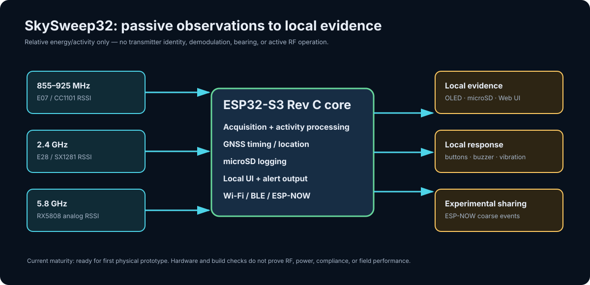

Passive inputs
Three fitted receive paths provide relative RSSI/activity observations. They do not identify a transmitter, demodulate a protocol or video, calculate a bearing, or prove range.
A coherent system for observing relative RF activity at 855–925 MHz, 2.4 GHz, and 5.8 GHz, then recording and presenting that evidence locally.

Three fitted receive paths provide relative RSSI/activity observations. They do not identify a transmitter, demodulate a protocol or video, calculate a bearing, or prove range.
The ESP32-S3 coordinates GNSS, microSD logs, OLED, alerts, and a local Web UI. Data handling remains subject to local privacy and aviation law.
Wi-Fi, BLE receive, and ESP-NOW paths build from source. On Rev C, range, coexistence, and standards conformance are still physical-test work.
| Area | What exists now | What remains unproven |
|---|---|---|
| 855–925 MHz | CC1101 RSSI/activity samples at 860, 890, and 920 MHz | Sensitivity, selectivity, antenna behavior, false activity |
| 2.4 GHz / 5.8 GHz | SX1281 RSSI sweep and RX5808 analog RSSI path | Input acceptance, response, self-interference and RF performance |
| GNSS, SD, OLED, controls, power | Fitted Rev C contract and firmware paths | First-board bring-up, charge/thermal safety, endurance, serviceability |
| Web UI, BLE, ESP-NOW, Remote ID | Source implementation and parser/receive infrastructure | No Rev C runtime, range, over-air, or standards conformance claim |
| LoRa/Meshtastic, TinyML, ATAK, 5.8 video | Not current Rev C capabilities | Separate evidence-backed future work only |
Use only the Rev C route. Rev A, Rev B, and historical v0.6.1 binaries target incompatible hardware and are not current order or flash sources.
Current reproducible checks cover schematic/PCB CAD, fabrication export, enclosure collision/service constraints, firmware build, and host parser contracts. They do not substitute for measured RF, power, USB, GNSS, mechanical tolerance, reliability, compliance, or field behavior.
Система наблюдает относительную RF-активность в диапазонах 855–925 МГц, 2.4 и 5.8 ГГц и сохраняет локальные доказательства через GNSS, microSD, OLED и Web UI.
Это пассивное наблюдение энергии/activity: не идентификация передатчика, не демодуляция, не пеленгация и не активное RF-воздействие. Wi-Fi, BLE и ESP-NOW требуют проверки на физическом Rev C; LoRa/Meshtastic, TinyML, ATAK и 5.8 video не являются возможностями Rev C.